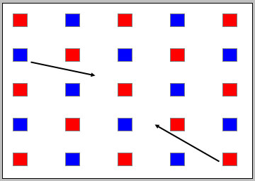
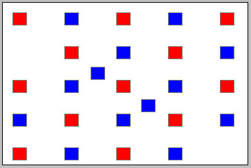
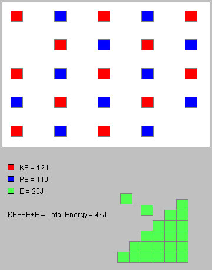

Instructions
This page is designed to get you started using the applet. The applet should be open. The step-by-step instructions on this page are to be done in the applet. You may need to toggle back and forth between instructions and applet if your screen space is limited.
 Transforming One Kind of Energy into
Another
Transforming One Kind of Energy into
Another
 Changing the Amount of Energy of the System
Changing the Amount of Energy of the System
When the applet is freshly loaded, the display of red and blue blocks looks like that in Figure 1 below, without the arrows. There are 13 red blocks, representing 13 J of kinetic energy, and 12 blue blocks, representing 12 J of potential energy.

Figure 1
Move the second blue block (by clicking on it and dragging) from the first column to the point indicated by the black arrow, and do likewise for the red block in the bottom right corner. Double-click on the latter block once you have moved it. The result should look like that in Figure 2 below.

Figure 2
The tally below the white system window says that there are 12J of kinetic and 13 J of potential energy.
Exercise. Change the distribution of potential and kinetic energy in the system so that there is 10 J of kinetic energy and 15 J of potential energy.

There are 25 J of energy in the system initially, distributed over potential and kinetic energy, and there are 21 J of energy outside the system. The latter is represented by green blocks.
Start from the energy distribution shown in Figure 2. Drag one of the two blocks that you moved earlier outside of the system. Then do the same with the other block. Notice that the color of the blocks changes to green as they leave the system, which symbolizes that the energy gets converted to another form, e.g., chemical energy. The total number of blocks inside and outside the system, i.e., the total energy, remains the same.
There should now be 12 J of kinetic energy and 11 J of potential energy in the system and 23 J of energy outside the system, for an unchanged total of 46 J.

Figure 3
Exercise. By moving and converting blocks, create a distribution of energies where there are 19 J of energy outside the system, and 15 J of kinetic energy and 12 J of potential energy inside the system.